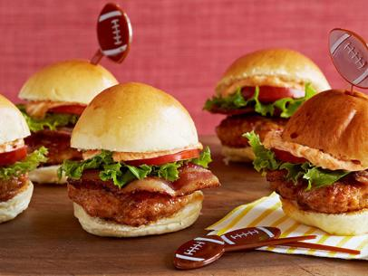
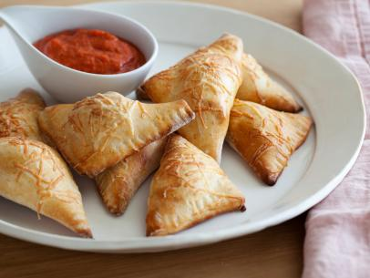

| Ingredients |
Directions |
|
Preheat a flat top grill pan to medium high heat. |
| 1 1/2 pounds ground pork |
In a medium bowl, mix the ground pork, sausage, cheese, shallot, garlic, and salt and pepper, to taste. Form the meat mixture into small equal-sized patties. Cook the burgers for 3 to 4 minutes on each side. Remove them from the pan and serve on split rolls with a half a slice of bacon, lettuce, tomato and Smoked Paprika Mayonnaise. |
| 1/2 pound fresh Mexican chorizo sausage, casings removed |
Same as above |
| 1/4 cup finely grated pepper jack cheese |
Same as above |
| 1 small shallot, finely chopped |
Same as above |
| 1 clove garlic, finely chopped |
Same as above |
| Kosher salt and freshly ground black pepper |
Save as above |
| 8 slices applewood smoked bacon, cooked crisp |
Cook in a frying pan until crispy |
| 16 small dinner rolls, sliced in half |
Split rolls in half for the patties |

| Curly leaf lettuce |
Serve on sliders |
| 3 sliced plum tomatoes |
Slice and serve on sliders |
| Smoked Paprika Mayonnaise, recipe follows |
|
| 1/4 cup mayonnaise |
Mix all of the ingredients together in a medium bowl. Cover with plastic wrap and refrigerate until serving, allowing the flavors to meld. Can be made a day ahead |
| 1 tablespoon smoked paprika |
Same as above |
| 1 teaspoon hot sauce (recommended: Sriracha) |
Same as above |
| Ingredients |
Directions |
| 1 tablespoon olive oil |
Heat the olive oil over medium-high heat in a medium-sized, heavy skillet |
| 8 ounces Italian turkey sausage |
Add the sausage and cook until crumbled and golden, about 5 minutes |
| 1 cup tightly-packed arugula (about 1 ounce) |
Add the arugula and cook until wilted |
| 4 ounces cream cheese, room temperature |
Turn off the heat and let cool about 10 minutes. Add the cream cheese, 1/3 cup Parmesan, salt, and pepper and stir to combine. Set aside. |
| 1/3 cup grated Parmesan, plus 1/4 cup |
Same as above |
| 1/2 teaspoon salt |
Same as above |
| 1/4 teaspoon freshly ground black pepper |
same as above |
| 1 (13.5-ounce) package of store-bought pizza crust (recommended: Pillsbury) |
Preheat the oven to 400 degrees F. Roll out the pizza dough on a lightly floured surface to a thin 20 by 12-inch rectangle. Cut the rectangle in half lengthwise. The cut each half into 8 equal rectangles. |
| All-purpose flour, for rolling out pizza dough |
Same as above |

| 1 egg, beaten (for egg wash) |
Spoon topping onto 1 side of each of the rectangles. Using a pastry brush, brush the edges of the rectangle with egg wash. Close the rectangle of pizza dough over the topping. Use a fork to seal and crimp the edges. Place the pizza pockets onto a parchment paper-lined baking sheet. Brush the top of each pizza pocket with egg wash. Sprinkle with the remaining Parmesan. Bake until golden, about 15 to 17 minutes. |
| 1 1/2 cups marinara sauce, store-bought or homemade |
Heat the marinara sauce over low heat in a medium saucepan. Serve the hot pizza pockets with the marinara sauce alongside for dipping. |